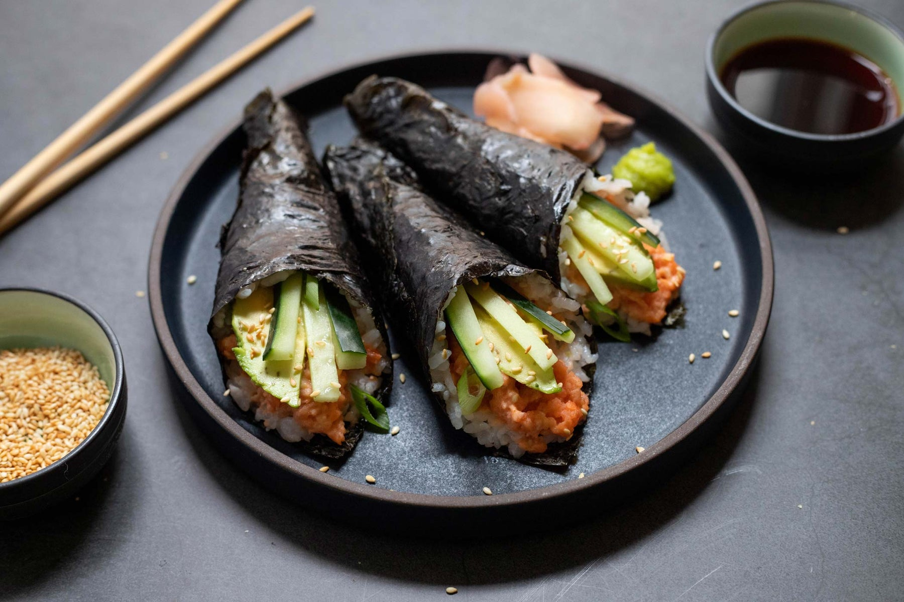

Soy-Glazed Salmon Hand Rolls

Description
Unagi sauce is a sweet, thickened soy sauce traditionally used on grilled eel. Here, the simple sauce of soy sauce, sugar and mirin is enhanced with the addition of aromatic garlic and ginger, transforming it into a savory glaze for buttery salmon. Once the salmon is roasted and lacquered in the sauce, it becomes the perfect filling for customizable hand rolls. A perfect roll is assembled with the flaked salmon and some creamy avocado and crisp cucumbers for bites that are rich, fresh and crunchy all at once. Including cooked short-grain rice in the filling is traditional, but these rolls would be a great place to use other leftover grains like farro or quinoa.
Ingredients
- 1 tbsp neutral oil
- 1/2 tsp minced garlic
- 1/3 cup low-sodium soy sauce
- 1/3 cup mirin
- 2 tbsp granulated sugar
- 1/4 tsp black pepper
- 1/2 tsp peeled grated ginger
- 1 (1 1/2 lb) salmon fillet
- Toasted seeweed sheets
- Cooked sushi rice
- 1/2 cucumber, cut lengthwise into thin spears
- 1 avocado, pitted and thinly sliced
- Wasabi, optional
Steps
- Heat oven to 425 degrees. In a small saucepan, heat 1 tablespoon of the oil over medium-high. Stir in garlic until fragrant, 30 seconds. Add soy sauce, mirin, sugar, and black pepper, and bring to a simmer. Reduce heat to medium-low and cook, stirring occasionally, until sauce is reduced by about a third and has thickened slightly, 10 to 15 minutes. Stir in ginger and remove from heat. You should have about 1⁄2 cup sauce; reserve half of the sauce in a small bowl for serving and set aside.
- Line a sheet pan with aluminum foil. Place salmon on the prepared sheet. Coat the salmon on both sides with half of the sauce.
- Roast salmon for 5 minutes, then baste with the sauce that's dripped onto the sheet tray. Continue to roast until salmon is just cooked to medium, about 5 minutes longer. Transfer salmon to a large plate.
- Flake salmon into bite-size pieces and drizzle with the reserved sauce. To build hand rolls, top seaweed with some rice (if using), cucumbers, avocado and salmon. Wrap and enjoy. Serve with optional wasabi on the side, and dab a little onto the salmon for a spicy hit.
Note:
Adapted from NYTimes Cooking; I've removed the extra salt, limited the sugar and oil, and simplified the process a little bit.